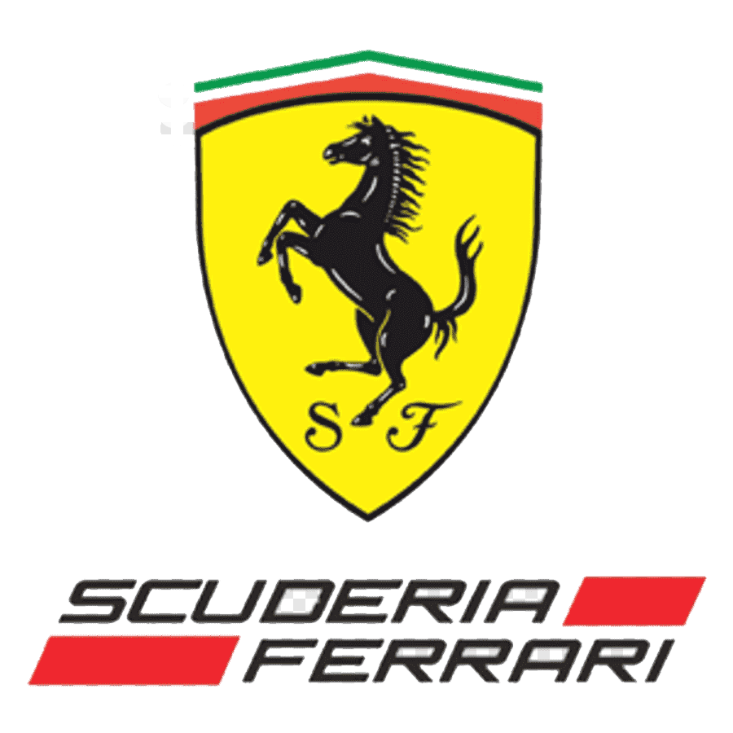
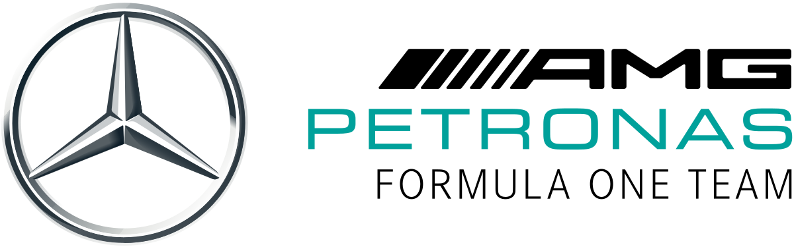
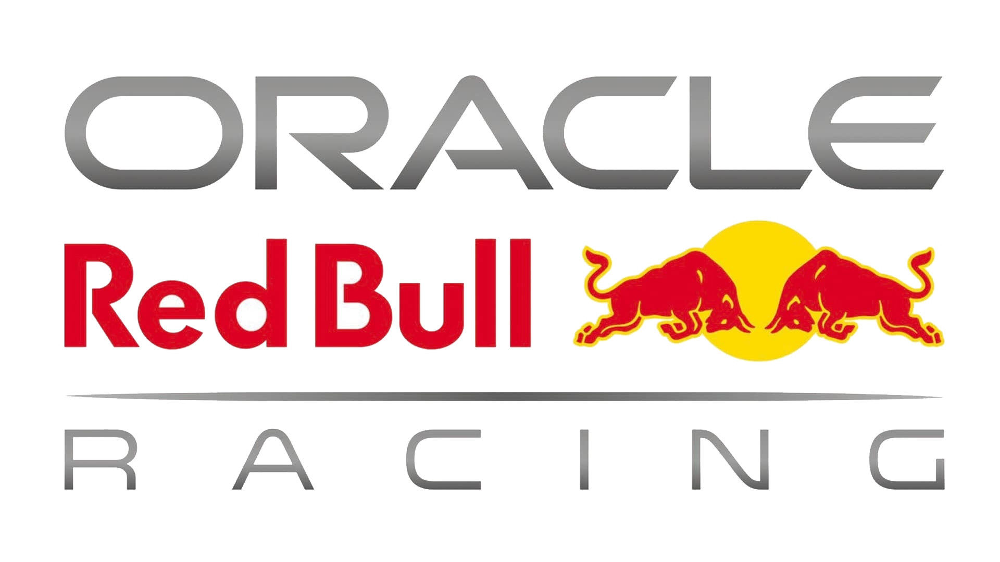
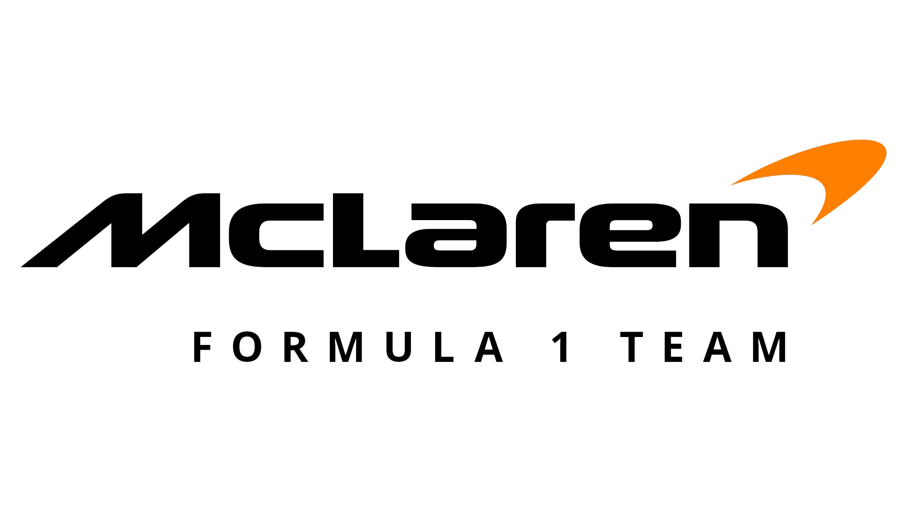
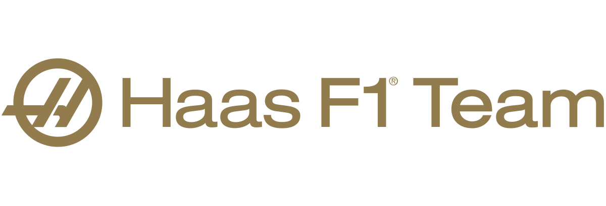
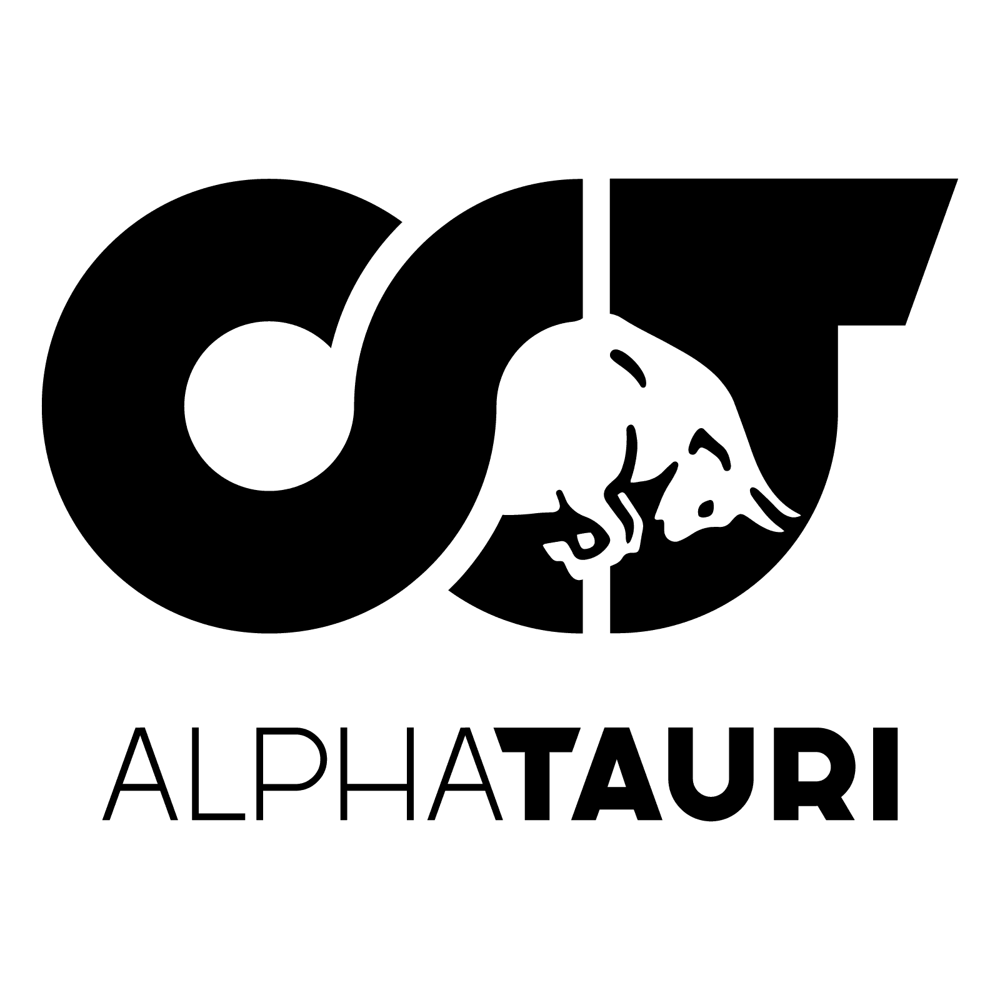

Timovi/Ucesnici Formule 1
| Tim | Broj bodova |
|---|---|
| Sezona 2022 | |
| Scuderia Ferrari | 104 |
| Mercedes-AMG | 65 |
| Red Bull Racing | 55 |
| Mclaren | 24 |
| Alpine | 22 |
| Alfa Romeo | 13 |
| Haas F1 Team | 12 |
| AlphaTauri | 10 |
| Williams | 1 |
| Aston Martin | 0 |
Scuderia Ferrari
- Skuderija Ferari (Scuderia Ferrari) je naziv odeljenja italijanske automobilske kompanije Ferari.
- Odeljenje je posvećeno auto-trkama i poznato je po svom formula 1 timu.
- Simbol tima je konj koji se propinje, a boja tima je crvena.
- Reč skudera na italijanskom znači štala, a Ferari je prezime osnivača kompanije, Enca Ferarija.
- Firma je osnovana 1929. godine.
- Sedište firme je u gradiću Maranelo, u blizini Modene, u severnoj Italiji.
- U početku je nastupala za Alfa Romeo, a u formuli jedan je od samog početka 1950. godine.
- Navijači Ferarija se popularno nazivaju „tifosi“.
Mercedes-AMG
-Mercedes-AMG Petronas F1 tim je tim i konstruktor u Formuli 1.
-Tim je debitovao 1954. godine. Imao je mnogo uspeha 1954. i 1955. godine u Formuli 1.
-Titulu za ovaj tim je u to vreme osvojio petostruki prvak formule 1, Huan Manuel Fanhio.
-Posle 1955. godine tim se povukao iz takmičenja.
-Iako se od devedesetih godina dvadesetog veka javlja kao dobavljač motora za F1 timove,
tek od 2010. godine se vraća u takmičenje kao samostalan tim.
partnerstvu sa firmom Abar investments kupio 75,1% akcija tima Bron GP (Dajmler: 45,1%, Abar: 30%).
-Bron je osvojio svetsko vozačko i konstruktorsko prvenstvo Formule 1 2009. godine u jedinoj sezoni svog postojanja,
nakon što su početkom marta kupili Hondu F1.
Red Bull Racing
-Red bul rejsing je trkački tim Formule 1, koji se takmiči sa automobilom koji pokreće Honda pod austrijskom licencom i sa sedištem u Ujedinjenom Kraljevstvu.
-To je jedan od dva tima Formule jedan u vlasništvu kompanije za piće Red bul GmbH, a drugi je Skuderija Alfa Tauri (ranije Skuderija Toro Roso).
-Timom Red bul rejsing rukovodi Kristijan Horner od njegovog formiranja 2005. godine.
-Red bul je imao Kosvortov motore 2005. i Ferari motore 2006.
-Tim je koristio motore koje je isporučivao Reno između 2007. i 2018. (od 2016. do 2018. motor Reno je ponovo označen kao „TAG Hojer“ nakon raspada odnosa između Red bula i Reno 2015. godine).
-Tokom ovog partnerstva, osvojili su četiri uzastopne titule šampiona vozača i konstruktora od 2010. do 2013. godine, postavši prvi austrijski tim koji je osvojio titulu.
-Partnerstvo sa Hondom kulminiralo je 2021. nakon pobede vozača Red bula Maksa Verstapena u svetskom šampionatu vozača.
-Honda će nastaviti da isporučuje kompletne motore iz Japana za Red bul i Alfa Tauri do kraja 2025. godine.
Mclaren-F1
-Maklaren (engl. McLaren) je engleski tim Formule 1, osnovan 1963, svoj gran pri debi zabeležio je 1966. u Monaku.
-Tim je osnovao Novozelanđanin Brus Maklaren, koji je ujedno bio i vozač ove ekipe od 1966. do 1970. kada je tragično nastradao.
-Do 1972. tim se takmičio pod imenom Brus Maklaren motor rejsing, kada menja ime u Jardli tim Maklaren.
-Danas je pun naziv tima Maklaren F1 tim, i drugi je najuspešniji tim u istoriji Formule 1 posle Ferarija.
-Ekipa je za 51 godinu takmičenja osvojila 12 vozačkih i osam konstruktorskih titula, uz 182 pobede i 155 pol pozicija.
-Sedište tima nalazi se u engleskom gradiću Voking.
Alpine

-Alpin F1 tim (fr. Alpine F1 Team) je tim u Formuli 1 koji je debitovao na početku Svetskog šampionata Formule 1 2021.
-Ranije se zvao Reno F1 tim i u vlasništvu francuske automobilske kompanije Reno grupacija.
-Tim je rebrendiran za 2021. godinu radi promocije Renoove marke sportskih automobila, Alpin, i nastavlja da služi kao Renoov radni tim.
-Šasija i menadžerska strana tima su sa sedištem u Enstonu, Oksfordshiru, Engleskoj, a strana motora tima sa sedištem u Viri-Čatilonu, predgrađu Pariza u Francuskoj.
Alfa Romeo

-Alfa Romeo je švajcarski tim Formule 1 sa sedištem u gradiću Hinvil u Švajcarskoj. Alfa Romeo je kao konstruktor i snabdevač motorima učestvovao u Formuli 1 od 1950. do 1987.
-Tim je osvojio prva dva trofeja u konkurenciji vozača 1950. i 1951.godine, a onda je ugašen.
-Tim Zauber osnovan je sedamdesetih godina 20. veka i u početku se takmičio na trkama sportskih automobila, da bi 1993. na Velikoj nagradi Južne Afrike takođe počeo da učestvuje i u trkama Formule 1.
-Tim je 2005. prodat nemačkom BMV-u, da bi od 2010. opet počeo da na takmičenja izlazi samostalno.
-Od 2018. godine tim se zove Alfa Romeo Zauber, da bi od početka sezone 2019. tim počeo da se zove Alfa Romeo.
Haas F1 Team
-Has Formula LLC se u Formula 1 šampionatu takmiči pod imenom Has F1 tim (engl. Haas F1 team).
-To je američki tim Formule 1 sa sedištem u Kanapolisu, Severna Karolina .
-Tim, takođe ima i drugu bazu u Banburiju, Oksfordšir koja se koristi kada se tim takmiči na trkama u Evropskom delu takmičenja Formule 1.
-Osnivač i predsednik tima Džin Has imao je dugu istoriju u moto-sportu pre nego što je podneo kandidaturu za takmičenje u Formuli 1.
-Između ostalog, osnovao je i NASKAR tim Has CNC rejsing, koji se sada zove Stjuart Has rejsing.
AlphaTauri
-Skuderija Alfa Tauri (ita. La Scuderia AlphaTauri) ili samo Alfa Tauri, do skoro poznat kao Skuderija Toro roso (Scuderia Toro Rosso), jeste naziv drugog Formula 1 tima koji je u vlasništvu austrijskog proizvođača napitaka Red bula.
-Prvi tim je Red bul rejsing.
-Alfa Tauri učestvuje u Formula 1 takmičenju od 2006., a Red bul rejsing od 2005. godine.
-Alfa Tauri je nastao nakon kupovine tima Minardi od strane austrijske kompanije i bivšeg austrijskog vozača Formule 1, Gerharda Bergera, krajem 2005. godine. Jedan od kupoprodajnih uslova je bio da baza tima ostane u mestu Faenca u Italiji.
-Austrijska kompanija je odlučila i da da timu novo, ali ipak italijansko ime Toro Roso.
-Red bul je već posedovao jedan tim, Red bul rejsing, a uloga tima Toro roso je bila da obezbedi iskustvo za vozače za bratski tim.
-Od kraja 2008. godine kompanija Red bul je stoprocentni vlasnik tima. Krajem 2019. timu je odobrena promena imena u Alfa Tauri.
Williams

-Vilijams je naziv za britanski formula 1 tim.
-Pun naziv tima je Vilijams Grand Pri Inženjering (engl. Williams Grand Prix Engineering Ltd.).
-Osnivač i vlasnik tima je ser Frenk Vilijams, a glavni inženjer je Mark Gilan.
-Tim učestvuje u trkama formule 1 od 1977. godine.
Najznačajniji period tima je bio u periodu od 1980. do 1997. kada su osvojili sedam titula vozača i devet titula u kategoriji konstruktora.
Aston Martin

-Aston Martin je britanski proizvođač automobila koji je učestvovao u Formuli 1 u različitim oblicima.
-Kompanija je prvi put učestvovala u Formuli 1 tokom sezone 1959. godine, gde su debitovali u šasiji DBR4 koristeći sopstveni motor, ali nije uspela da osvoji nijedan poen.
-Oni su nastavili sa lošim performansama kroz sezonu 1960, ponovo nisu uspeli da osvoje nijedan poen.
Kao rezultat toga, Aston Martin je odlučio da napusti Formulu 1 nakon 1960.
-Komercijalno rebrendiranje tima Rejsing pojnt F1 dovelo je do toga da se tim preimenuje u Aston Martin 2021. godine, iako se takmiči sa pogonskim jedinicama Mercedesa.
-Tim u vlasništvu Lovrensa Strola, a Sebastijan Fetel i Lans Strol su im glavni vozači.